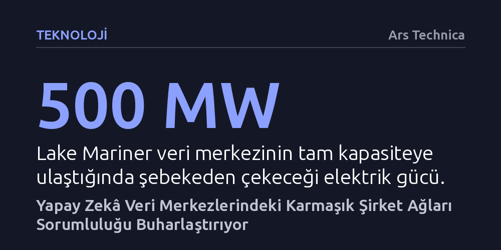

TEKNOLOJI · Ars Technica · 2026-09-07
Büyük teknoloji şirketleri, milyarlarca dolarlık yapay zekâ veri merkezlerini karmaşık mülkiyet zincirleri ardına gizleyerek güvenlik, çevre ve şebeke maliyeti sorumluluklarını yerel yönetimlere yıkıyor. Lake Mariner tesisindeki yangın ve denetimsizlik, devlerin kâğıt üzerindeki istihdam ve temiz enerji vaatlerinin sahada karşılığı olmadığını belgeliyor.
Yapay zekâ altyapısının 'yeşil ve kalkınma dostu' olduğu algısını yıkarak, dev şirketlerin milyarlarca dolarlık operasyonel riskleri ve enerji maliyetlerini yerel halkın sırtına nasıl yıktığını gösterir.

Haziran ayı başlarında New York'un Somerset kasabasında, Ontario Gölü kıyısındaki eski bir kömür madeni arazisinde inşaatı süren Lake Mariner veri merkezinde yangın çıktı. İhbar üzerine tesise giren yerel itfaiyeciler, neyle karşılaşacaklarını bilmeden yoğun ve zehirli siyah dumanların arasına adım attı. Binada çalışan bir alarm veya otomatik yangın söndürme sistemi bulunmadığı gibi sahadaki üç yangın musluğundan da su akmıyordu. Daha vahimi, itfaiye ekiplerinin içeride hangi kimyasalların yandığını anlamasını sağlayacak yasal güvenlik bilgi formlarının da alevlerde kül olduğu öne sürüldü; İtfaiye Şefi Steve Matisz ekibinin içeriye "adeta körlemesine" girmek zorunda kaldığını belirtti.
İtfaiye ekipleri alevleri söndürmek için tankerlerle su taşımak zorunda kaldı. Şans eseri can kaybı yaşanmadı ancak bu kaza, yapay zekâ altyapısındaki baş döndürücü büyümenin perde arkasındaki derin zafiyeti açığa çıkardı. Yangından iki ay sonra bile bölgedeki su şebekesi yetersizliği giderilmedi, buna karşın 3,2 milyar dolarlık devasa tesisin inşaatı tek bir gün bile aksamadan devam etti. Tesis yönetiminin yerel yetkililerin görüşme ve açıklama taleplerine kulak tıkaması ise sorunun sadece fiziksel değil, doğrudan kurumsal bir umursamazlık olduğunu gösterdi.
Lake Mariner sıradan bir teknoloji binası değil; dev yapay zekâ modellerini besleyen ama arkasındaki mülkiyet zincirini kasten karmaşıklaştıran tipik bir yeni nesil altyapı projesi. Tesisin sahibi ve işletmecisi olan TeraWulf şirketi, araziyi kendi icra kurulu başkanının kişisel mülkiyetindeki bir şirketten kiralıyor. Veri merkezinin teknik operasyonunu İngiltere merkezli Fluidstack firması yürütüyor. Kiralama sözleşmesinin mali garantörlüğünü ise gelecekte şirketten yüzde 14 hisse alma hakkını elinde tutan Google üstleniyor. Bütün bu devasa yatırım ise Anthropic gibi yapay zekâ üreticilerinin devasa işlemci gücü talebini karşılamak amacıyla ayakta tutuluyor.
Bu çok katmanlı yapı tesadüfi bir iş modeli değil; yasal, operasyonel ve itibar risklerini ortaklar arasında buharlaştıran bir kalkan işlevi görüyor. Sahada bir güvenlik faciası, çevre ihlali ya da şebeke sorunu baş gösterdiğinde gerçek muhatabın kim olduğu sorusu bu labirentin içinde cevapsız kalıyor. Anthropic doğrudan kendisine ait tesislerde sıkı standartlar uyguladığını savunurken, bu tip kiralık tesislerde çevre ve güvenlik denetimi yapacak bir mekanizmaya sahip olmadığını belirterek kenara çekilebiliyor. Google ise elindeki varantların doğrudan mülkiyet ve yönetim kontrolü doğurmadığını öne sürerek kamuoyunun karşısına çıkmayı reddediyor.
Büyük veri merkezi projeleri kırsal bölgelere sunulurken daima yerel refah ve istihdam vaatleriyle pazarlanıyor. Nitekim Somerset'teki tesis için 2019 yılında devletten elektrik indirimi istenirken bölgeye 85 milyon dolarlık yatırım ve 165 kalıcı iş sağlanacağı taahhüt edilmişti. Ancak projenin 2024 planlama toplantılarında, tam kapasiteye çıktığında 500 megavat gibi küçük bir ülkenin tüketimine denk enerji çekecek bu dev tesiste yalnızca 35 ila 40 kişinin istihdam edileceği açıklandı. Yüz milyonlarca dolarlık kamu kaynağını ve ucuz enerjiyi çeken kampüs, kasaba halkına kayda değer bir iş sahası açmadı.
Dahası, bu tesislerin kesintisiz elektrik tüketimi yerel halkın yaşam maliyetini doğrudan artırıyor. Yılın her günü aralıksız çalışan yüzlerce megavatlık dev yükler, mevcut iletim hatlarını zorluyor ve şebekeyi güçlendirmek için milyarlarca dolarlık ek altyapı yatırımı gerektiriyor. Tüketimin zirve yaptığı anlarda devreye alınan pahalı yedek santrallerin faturası da dahil olmak üzere bütün bu ek maliyetler, tesisten hiçbir fayda sağlamayan sıradan abonelerin elektrik faturalarına paylaştırılıyor. Anthropic tüketicilerin uğradığı fiyat artışlarını karşılama sözü verse de bu güvence gürültü kirliliğini, su tüketimini ve temiz enerji denetimini tamamen kapsam dışı bırakıyor.
Tesisin çevreye duyarlılık karnesi incelendiğinde de benzer bir göz boyama mekanizması göze çarpıyor. TeraWulf, 2024 sürdürülebilirlik raporunda tesisin yüzde 95 oranında "sıfır karbonlu enerjiyle" çalıştığını iddia etmişti. Ancak sonraki kurumsal politikalarda bu ifade sessizce "düşük karbonlu enerji" olarak değiştirildi ve oran yüzde 91'e çekildi. İşin aslı, Lake Mariner'ın doğrudan belirli bir rüzgâr ya da güneş santralinden enerji aldığına dair bağlayıcı hiçbir ikili anlaşması bulunmuyor. Şirket, yalnızca New York'un nükleer ve hidroelektrik ağırlıklı bölgesel şebekesinin genel temizlik ortalamasına sığınarak tesisini çevreci ilan ediyor.
Bunun da ötesinde, tesisin tükettiği elektriğin yaklaşık 90 megavatlık bölümü, eyaletin sanayiyi çekmek amacıyla sunduğu indirimli Yüksek Yük Faktörü programından, toptan elektrik piyasası üzerinden temin ediliyor. Bu elektrik; nükleer ve suyun yanı sıra fosil yakıtlı doğalgaz santrallerinden gelen enerjiyi de içeren sıradan bir piyasa karması niteliğinde. Tesis bu elektriği temiz olarak nitelemek için yenilenebilir enerji sertifikası dahi satın almıyor. Karbon ayak izini gerçek zamanlı sıfırlama konusunda en katı standartlara sahip olduğunu iddia eden Google ve iklim vaatlerinde bulunan Anthropic, kiraladıkları bu dev kampüste tüketilen elektriğin ne kadarının gerçek anlamda temiz olduğunu teyit etmekten kaçınıyor.
New York Eyalet Meclisi, kontrolsüz veri merkezi patlamasını dizginlemek amacıyla kapsamlı bir Veri Merkezi Sorumlu Gelişim Yasası hazırladı. Bu düzenleme; inşaatlarda sendikal asgari ücret ödenmesini, kapsamlı çevresel etki değerlendirmelerini, 2040'a kadar zorunlu yenilenebilir enerjiye geçişi ve 20 megavatın üzerindeki yeni projelere bir yıllık moratoryum getirilmesini şart koşuyordu. Ancak meclisten geçen bu yasa tasarısı aylardır vali tarafından onaylanmadan bekletiliyor. Eyalet valisi, meclisin kapsamlı çerçevesini imzalamak yerine sadece 50 megavat üstü yeni tesislere yönelik çok daha dar bir yürütme emriyle yetindi.
Sürecin en çarpıcı tarafı ise yürürlüğe konan hiçbir kısıtlamanın Lake Mariner'ı etkilememesi. 500 megavatlık devasa kapasite izinlerini moratoryumdan önce tamamlamış olan tesis, yasal denetim çemberinin tamamen dışında kaldı. Maryland'de benzer bir santral alımında yerel halkla görüşmeyi düzenleyici kurum kuralları gerektirmediği gerekçesiyle reddeden aynı şirket zihniyeti, Somerset'te de varlığını koruyor. Yerel itfaiye susuzlukla, kasaba halkı ise cevapsız sorularla baş başa kalırken, yapay zekânın arkasındaki devasa kurumsal makine hesap verme zorunluluğu hissetmeksizin çalışmayı sürdürüyor.